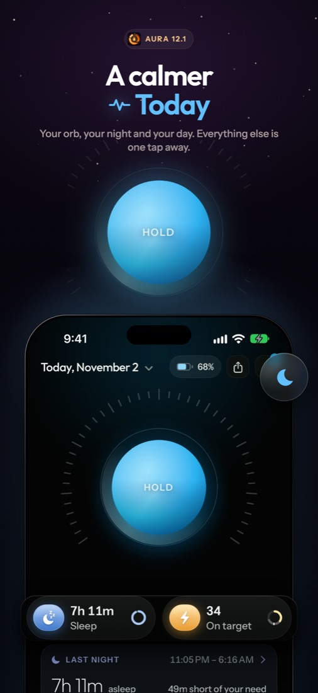
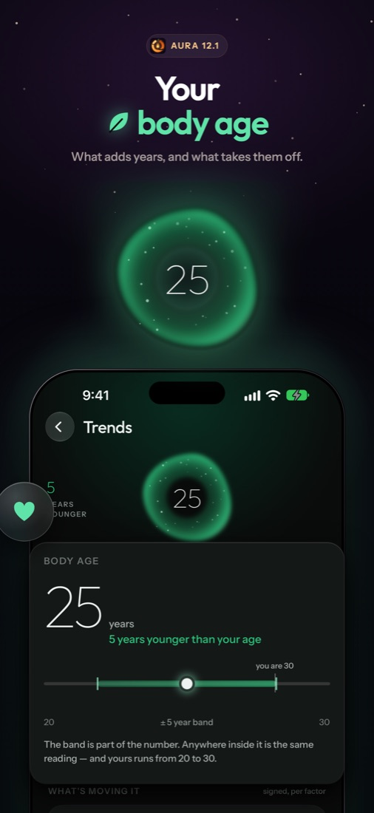
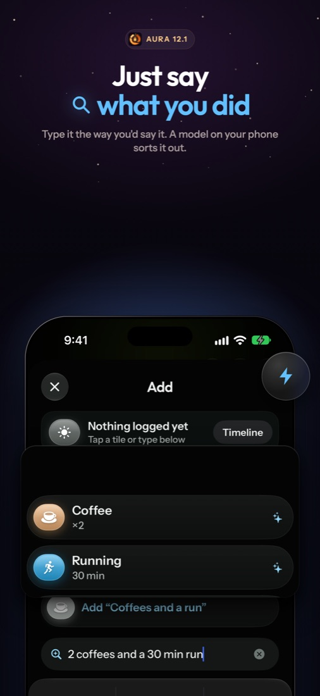
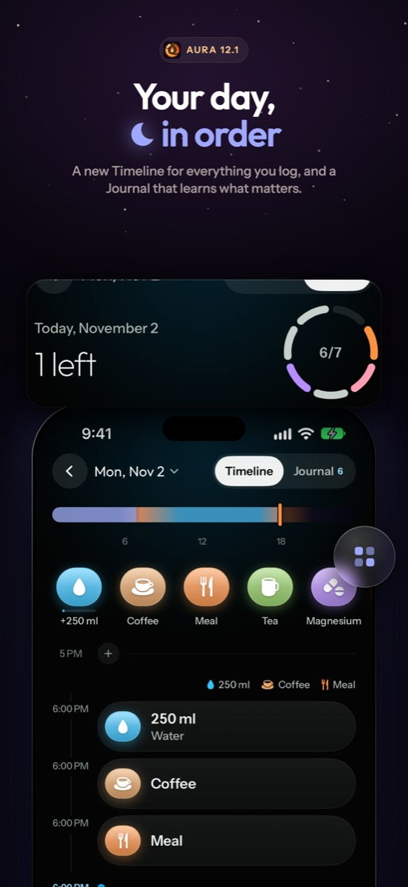
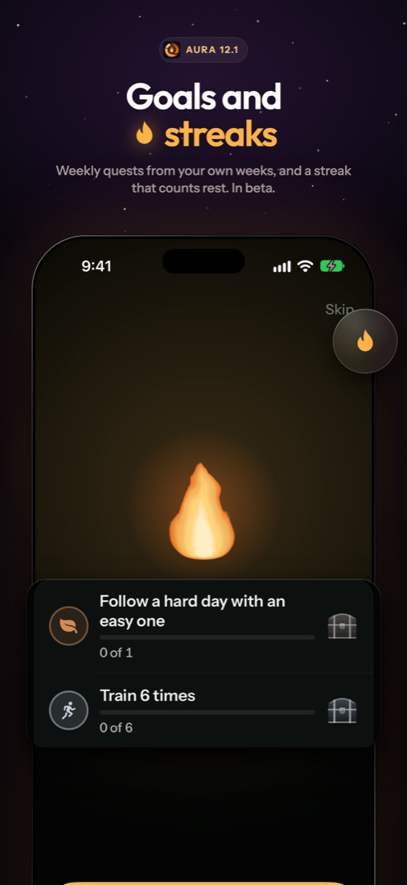
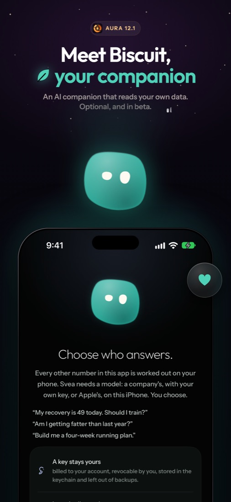

Sleep and recovery
Sleep stages, sleep score, HRV and resting heart rate. How well you rested, and what it means for today.
Aura is a free, private health app for iPhone. Sleep better, recover smarter, train with purpose and see how you're aging, one day at a time.
Inside Aura

A calmer Today

Your body age

Log anything

Timeline and Journal

Goals and streaks

Biscuit, your companion
Everything in one place
Sleep stages, sleep score, HRV and resting heart rate. How well you rested, and what it means for today.
What adds years, and what takes them off. Watch it move as your habits change.
Sessions, routines, routes and your progress. Export FIT, TCX or GPX, with Strava and Hevy built in.
Search a food, scan a barcode or show Svea a photo. A water goal from your body and the weather.
Goals, streaks, bloodwork, weight and a daily journal. See the long story, not just today.
Type it the way you'd say it: coffee, sauna, a late meal. Aura sorts it out on your phone.
An optional AI companion that reads your own data and talks it through with you.
Works with
Private by design
Aura works everything out on your iPhone. Nothing goes anywhere unless you turn it on.
FAQ
Yes. Aura reads WHOOP 4.0, 5.0 and MG straps directly over Bluetooth on your iPhone, with no WHOOP membership or subscription. It never logs in to a WHOOP account or a WHOOP server.
WHOOP 4.0, 5.0 and MG straps, 38 Bluetooth smart scales and Apple Health. Aura also brings in your history from Strava, Hevy and other apps.
Sleep stages and sleep score, recovery, HRV, resting heart rate, strain, workouts, SpO₂, skin temperature, body age, weight, bloodwork, food and water.
Aura is free, with no ads and no account. It isn't on the App Store: you install the IPA with SideStore, AltStore or Sideloadly. Updates arrive inside the app. Use SideStore or AltStore? Add the Aura source and updates show up there too.
Your health data is worked out and kept on your iPhone. Apple Health, Strava, Hevy and the optional Biscuit AI get data only if you turn them on. If you turn on AI food estimates, your photo goes to the AI provider you chose.
English, Georgian, German and Russian.